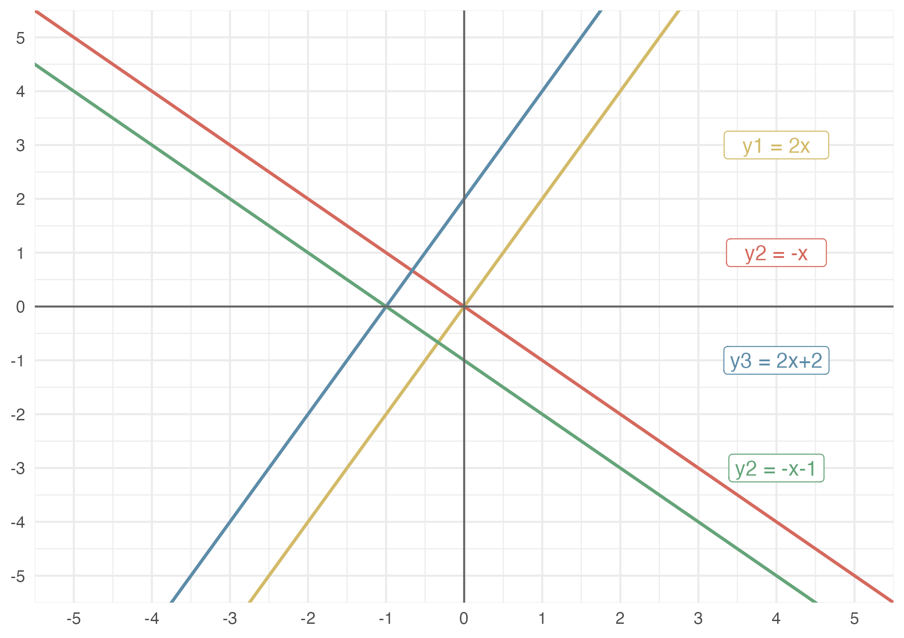
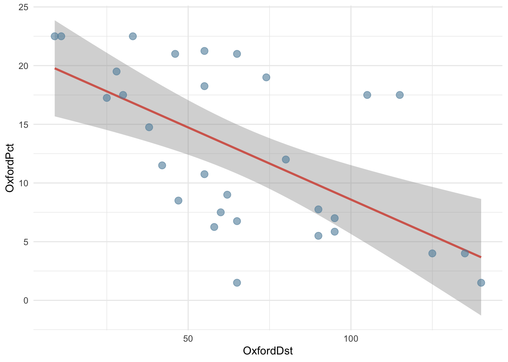
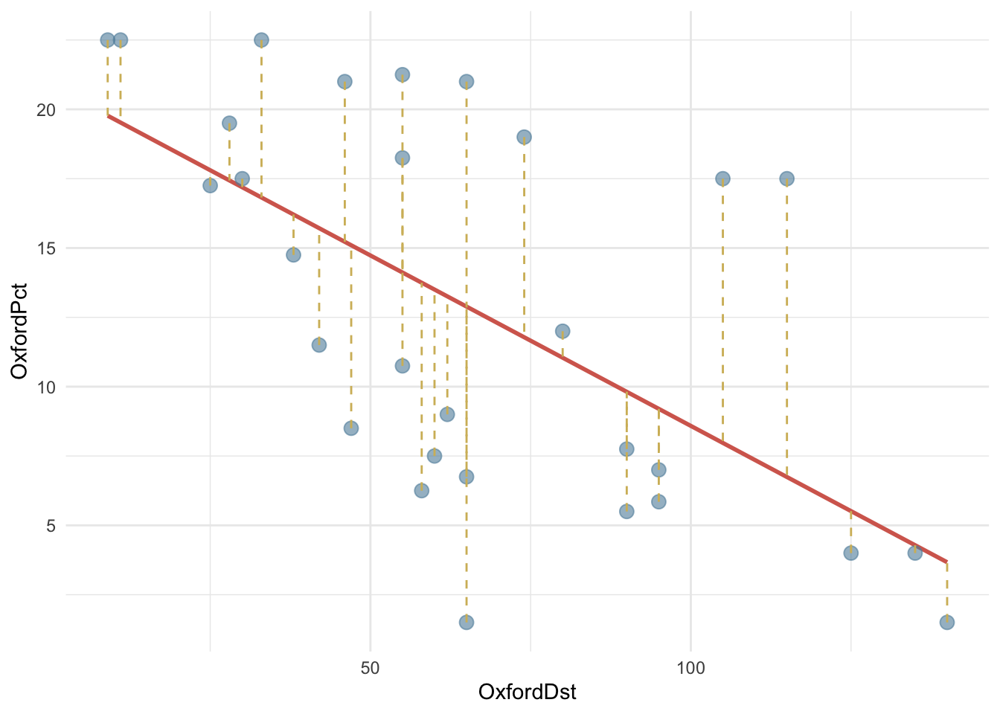
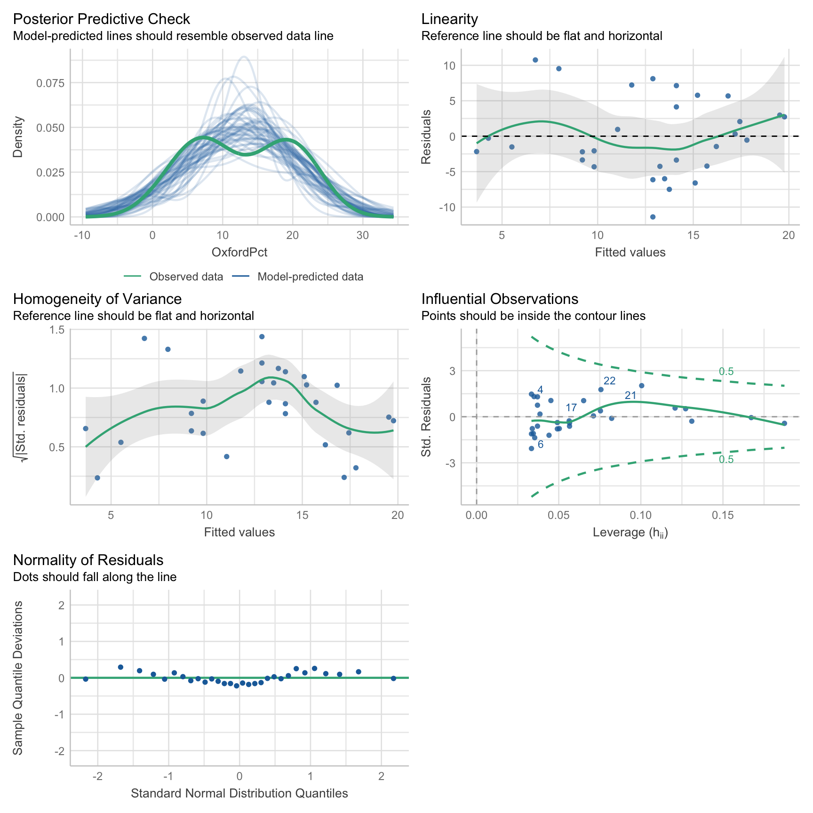
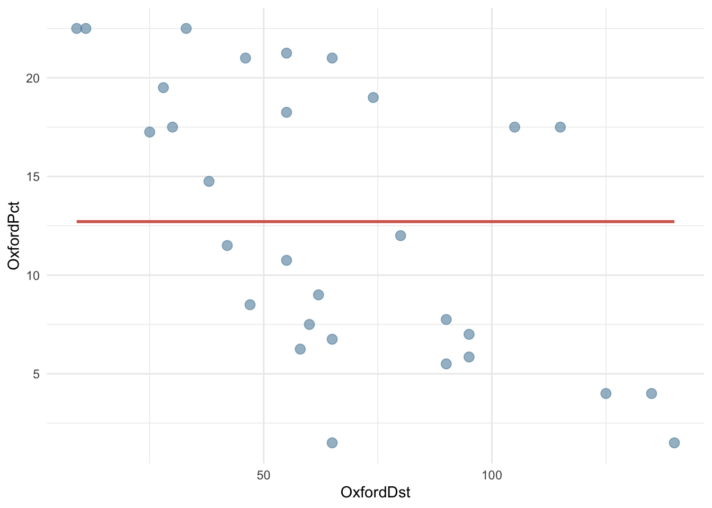
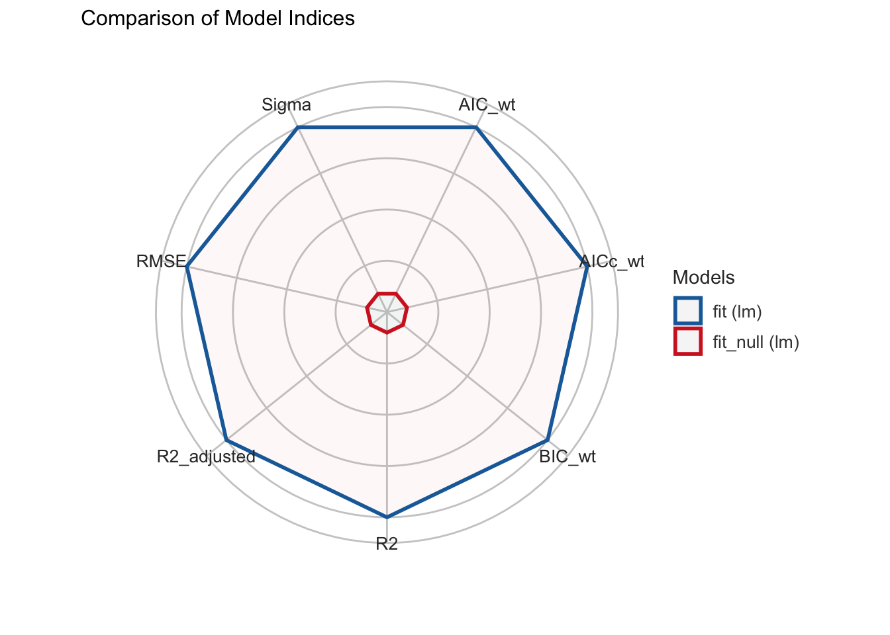
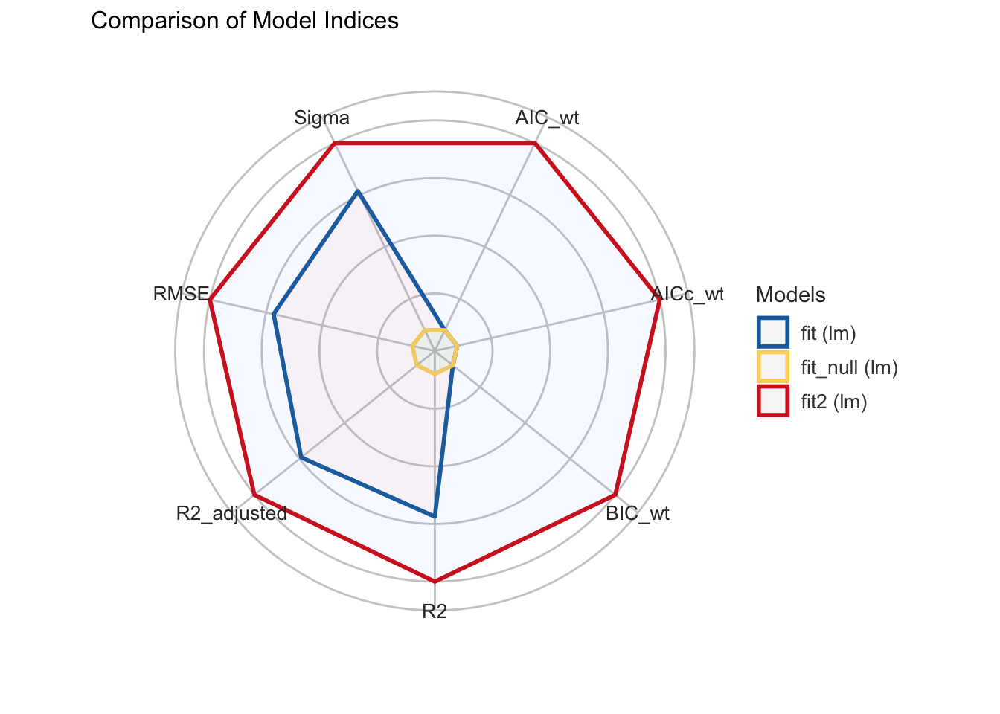
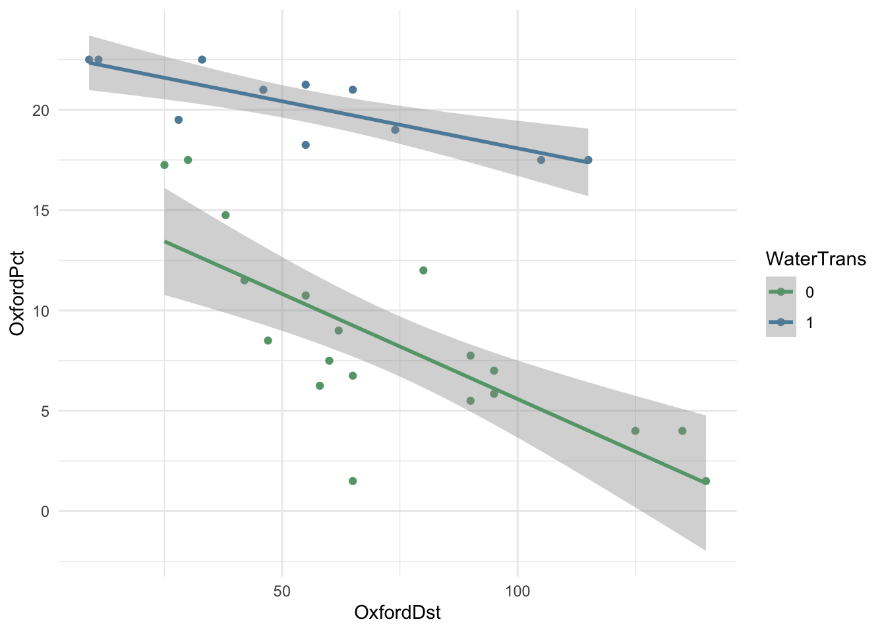
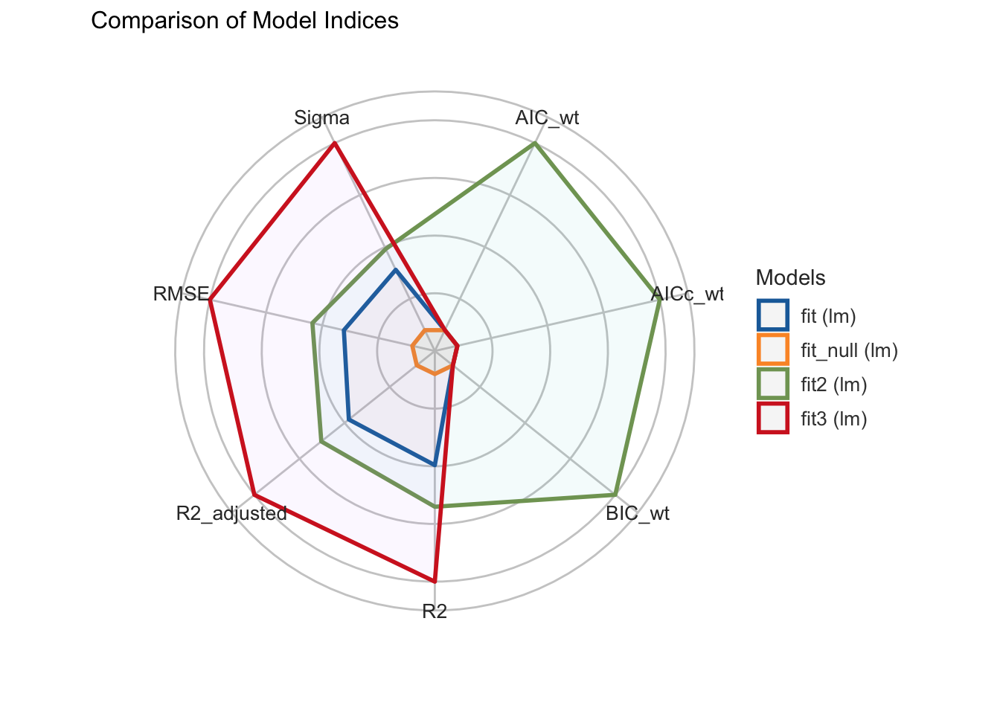

library(archdata)
library(tidyverse)
library(easystats)
library(equatiomatic)
library(broom)
library(gt)
data("OxfordPots")
OxfordPots22 Регрессионный анализ
В этом уроке мы познакомимся с методами простой и множественой линейной регрессии.
22.1 Данные: Оксфордская керамика
Данные для этого урока основаны на нескольких публикациях Яна Ходдера, который проанализировал пространственное распределение поздней романо-британской керамики, произведенной в Оксфорде, в статьях 1974 г. “The Distribution of Two Types of Romano-British coarse pottery” и “A Regression Analysis of Some Trade and Marketing Patterns”. Датасет доступен в пакете archdata, содержащем и другие наборы данных для археологов.
Датафрейм содержит 30 наблюдений по следующим 7 переменным:
- место;
- процент оксфордской керамики;
- расстояние до Оксфорда в милях;
- процент гончарных изделий из Нью-Фореста;
- расстояние до Нью-Фореста;
- площадь обнесенного стеной города;
- наличие водного транспортного сообщения.
22.2 Простая линейная регрессия
Простая линейная регрессия – метод, который позволяет предсказывать количественный отклик переменной y на основе единственной независимой переменной x. Случайная величина, которая используется для целей предсказания, называется предиктором. Величина, значения которой предсказываются, называется переменной отклика. Здесь мы освоим лишь самые азы, подробнее стоит посмотреть соответствующие уроки курса “Introduction to Modern Statistics (2e)”.
22.2.1 Линейная функция
Чтобы разобраться с регрессией, надо вспомнить, что такое линейная зависимость:
\[y\approx\beta_o + \beta_1x\]
В этом уравнении \(\beta_o\) и \(\beta_1\) - это константы, известные как свободный член и угол наклона линейной модели. Совокупно их называют коэффициентами, или параметрами, модели. Геометрически первый из них определяет точку пересечения оси y (intercept), а второй – угол наклона (slope).
Посмотрите внимательно на линии на примере и подумайте, чем они отличаются.

22.2.2 Ошибка прогноза
На практике линейная зависимость в чистом виде почти не встречается: всегда есть небольшая ошибка прогноза (\(\epsilon\)):
\[y\approx\beta_o + \beta_1x + \epsilon\]

При создании регрессионной модели наша задача заключается в том, чтобы на основе доступных наблюдений подобрать коэффициенты \(\beta_0\) и \(\beta_1\) таким образом, чтобы минимизировать ошибку.
\[\sum(y_i- \hat y)^2 = \sum\epsilon^2\]
Чтобы подчеркнуть, что речь идет лишь об оценке, над бетой ставится “крышечка”:
\[\hat y \approx \hat\beta_o + \hat\beta_1x\]
22.2.3 Простая регрессия с lm()
Посмотрим, как связаны между собой процент керамических изделий из Оксфорда и расстояние от центра производства.
library(paletteer)
cols <- paletteer_d("ggthemes::wsj_rgby")
OxfordPots |>
ggplot(aes(OxfordDst, OxfordPct)) +
geom_smooth(method = "lm", color = cols[2], se = FALSE) +
geom_point(color = cols[3],
size = 3,
alpha = 0.6
) +
theme_minimal() 
Чем дальше от Оксфорда, тем меньше керамических изделий оттуда, поэтому линия имеет отрицательный наклон.
И наклон, и точку пересечения с осью y определяет функция lm.
fit <- lm(OxfordPct ~ OxfordDst, data = OxfordPots)
parameters(fit)| Parameter | Coefficient | SE | CI | CI_low | CI_high | t | df_error | p |
|---|---|---|---|---|---|---|---|---|
| (Intercept) | 20.88 | 2.23 | 0.95 | 16.30 | 25.45 | 9.35 | 28.00 | 0.00 |
| OxfordDst | −0.12 | 0.03 | 0.95 | −0.18 | −0.06 | −4.11 | 28.00 | 0.00 |
22.3 Параметры модели
22.3.1 Коэффициенты модели
Первый столбец в таблице с параметрами содержит коэффициенты модели.
| Parameter | Coefficient | SE | CI | CI_low | CI_high | t | df_error | p |
|---|---|---|---|---|---|---|---|---|
| (Intercept) | 20.88 | 2.23 | 0.95 | 16.30 | 25.45 | 9.35 | 28.00 | 0.00 |
| OxfordDst | −0.12 | 0.03 | 0.95 | −0.18 | −0.06 | −4.11 | 28.00 | 0.00 |
Это значит, что наши данные описываются функцией:
extract_eq(fit, use_coefs = TRUE)\[ \operatorname{\widehat{OxfordPct}} = 20.88 - 0.12(\operatorname{OxfordDst}) \]
Интуитивно понятно, что коэффициент \(\beta_1\) связан с ковариацией (мерой совместной изменчивости двух величин). Действительно, он рассчитывается по формуле:
\[\beta_1=\frac{Cov(x,y)}{Var(x)}\]Проверить.
x <- OxfordPots$OxfordDst
y <- OxfordPots$OxfordPct
beta_1<- cov(x, y) / var(x)
beta_1[1] -0.1229049Зная \(\beta_1\), можно вычислить \(\beta_0\) по формуле:
\[\beta_0=\bar y - \beta_1 \bar x\]Снова проверим.
beta_0 = mean(y) - beta_1 * mean(x)
beta_0[1] 20.8766522.3.2 Стандартные ошибки коэффициентов
Для обоих коэффициентов приведена стандартная ошибка и t-статистика. Столбец t, как легко убедиться, содержит результат деления коэффицентов на стандартную ошибку.
| Parameter | Coefficient | SE | CI | CI_low | CI_high | t | df_error | p |
|---|---|---|---|---|---|---|---|---|
| (Intercept) | 20.88 | 2.23 | 0.95 | 16.30 | 25.45 | 9.35 | 28.00 | 0.00 |
| OxfordDst | −0.12 | 0.03 | 0.95 | −0.18 | −0.06 | −4.11 | 28.00 | 0.00 |
Как рассчитываются стандартные ошибки.
Стандартная ошибка для \(\beta_0\) рассчитывается по формуле:
\[SE(\beta_0)=\sqrt{\frac{\sum_{i=1}^n\epsilon^2}{n-2}} \times \sqrt{\frac{1}{n}+\frac{\bar x^2}{\sum_{i=1}^n(x_i-\bar x)^2}}\]
Первый множитель в этой формуле – это дисперсия остатков модели. Чем она больше, тем больше неопределенность. На второй множитель влияет как размер выборки, так и разброс независимой переменной x: чем больше размер выборки n, тем меньше \(\frac{1}{n}\) и чем больше \(Σ(x - \bar x)^2\), тем меньше второй множитель. Посчитаем вручую и сравним с результатом, который возвращает команда summary(fit).
x_bar <- mean(x)
mult1 <- sqrt(sum(fit$residuals^2) / 28)
mult2 <- sqrt(1/30 + ( x_bar^2 / sum((x - x_bar)^2)))
mult1 * mult2[1] 2.233557Стандартная ошибка для \(\beta_1\) рассчитывается по формуле:
\[SE(b_1)=\sqrt{\frac{\frac{\sum_{i=1}^n\epsilon^2}{n-2}}{\sum_{i=1}^n(x_i-\bar x)^2}}\]
Большая дисперсия остатков (в числителе) будет приводить к увеличению ошибки, а размах \(x_i\) – к уменьшению; интуитивно это объясняется тем, что в таком случае у нас больше информации для оценивания угла наклона. Снова перепроверим.
mult1 / sqrt(sum((x - x_bar)^2))[1] 0.02989016Функция geom_smooth добавляет стандартную ошибку коэффициента наклона на график в виде серой полосы, которая означает, что с вероятностью 95% (значение по умолчанию, которое можно поменять) истинное значение отклика находится в этой зоне (predicted ± 1.95 * se). В статистике это называется доверительный интервал.
OxfordPots |>
ggplot(aes(OxfordDst, OxfordPct)) +
geom_smooth(method = "lm", color = cols[2],
se = TRUE, level = 0.95) +
geom_point(color = cols[3],
size = 3,
alpha = 0.6
) +
theme_minimal() 
22.3.3 P-значения
Столбец p.value указывает, какова вероятность случайно получить такое значение. В нашем случае – почти 0, что говорит о том, что доля оксфордской керамики на участке действительно зависит от расстояния.
| Parameter | Coefficient | SE | CI | CI_low | CI_high | t | df_error | p |
|---|---|---|---|---|---|---|---|---|
| (Intercept) | 20.88 | 2.23 | 0.95 | 16.30 | 25.45 | 9.35 | 28.00 | 0.00 |
| OxfordDst | −0.12 | 0.03 | 0.95 | −0.18 | −0.06 | −4.11 | 28.00 | 0.00 |
Как считается p-value.
tidy(fit) |>
transmute(t_stat = estimate / std.error) |>
mutate(p_val = 2*pt(abs(t_stat), 28, lower.tail = FALSE)) |>
export_table()t_stat | p_val
-----------------
9.35 | 4.18e-10
-4.11 | 3.11e-04Результат, возвращаемый функцией pt(), умножается на два, т.к. используется двусторонний t-test. Буква p в названии означает функцию распределения вероятностей (probability), а t – распределение Стьюдента для заданного числа степеней свободы (28 в нашем случае).
22.4 Оценка модели
Общая оценка модели проводится при помощи функции performace() из пакета {easystats} или базовой summary().
performance(fit)| AIC | AICc | BIC | R2 | R2_adjusted | RMSE | Sigma |
|---|---|---|---|---|---|---|
| 192.445 | 193.368 | 196.648 | 0.376 | 0.354 | 5.411 | 5.601 |
22.4.1 RSE, MSE, RMSE
| AIC | AICc | BIC | R2 | R2_adjusted | RMSE | Sigma |
|---|---|---|---|---|---|---|
| 192.445 | 193.368 | 196.648 | 0.376 | 0.354 | 5.411 | 5.601 |
Поскольку наши оценки могут быть как завышенными, так и заниженными, значения ошибок возводятся в квадрат и суммируются по всем точкам данных. Узнаем сумму квадратов остатков (RSS = Residual sum of squares), которая считается по формуле:
\[RSS = \sum_{i=n}^n(y_i- \hat y_i)^2\]
rss <- sum(fit$residuals^2)
rss[1] 878.439Зная это число, определяем среднеквадратичную ошибку (MSE = Mean square error), корень из среднеквадратичной ошибки (RMSE), а также стандартную ошибку остатков (RSE = Residual standard error).
mse <- rss / length(fit$residuals)
mse[1] 29.2813rmse <- sqrt(mse)
rmse[1] 5.41122rse <- sqrt(rss / fit$df.residual)
rse[1] 5.60114522.4.2 \(R^2\)
RSE – это мера несоответствия модели данным. Но поскольку она выражается в тех же единицах измерения, что и y, то не всегда бывает ясно, какая RSE является хорошей. Коэффициент детерминации \(R^2\) представляет собой альтернативную меру соответствия. Этот показатель принимает форму доли – доли объясненной дисперсии, в связи с чем он всегда изменяется от 0 до 1 и не зависит от шкалы измерения.
\[R^2 = \frac{TSS-RSS}{TSS} = 1 - \frac{RSS}{TSS}\] Здесь \(TSS = \sum(y_i - \bar y)^2\), то есть общая сумма квадратов.
TSS является мерой общей дисперсии отклика Y, и о ней можно думать как о степени изменчивости, присущей отклику до выполнения регрессионного анализа. В то же время RSS выражает степень изменчивости, которая осталась необъясненной после построения регрессионной модели. Следовательно, TSS - RSS выражает количество дисперсии отклика, объясненное (“изъятое”) после выполнения регрессионного анализа, а \(R^2\) – долю дисперсии Y, объясненную при помощи X. Статистика \(R^2\), близкая к 1, означает, что значительная доля изменчивости отклика была объяснена регрессионной моделью (Г. Джеймс, Д. Уиттон, Т. Хасти, Р. Тибришани 2017, 82).
tss <- sum((y - mean(y))^2)
tss[1] 1408.8781 - rss / tss[1] 0.3764977Снова сравним с результатом, который нам вернула модель.
| AIC | AICc | BIC | R2 | R2_adjusted | RMSE | Sigma |
|---|---|---|---|---|---|---|
| 192.445 | 193.368 | 196.648 | 0.376 | 0.354 | 5.411 | 5.601 |
Для простой линейной регрессии статистика \(R^2\) совпадает с квадратом коэффициента корреляции.
cor(x, y)^2[1] 0.376497722.4.3 Анализ остатков
Как правило, большинство точек не может лежать на линии, но линия подгоняется так, чтобы быть как можно ближе ко всем точкам. Иными словами, расстояния от каждого наблюдения до линии регрессии (так называемые невязки) должны быть минимальны.
Невязка – это разница между прогнозируемым и фактическим значениями отклика: \((y_i- \hat y)\). На графике ниже невязки обозначены пунктиром.
OxfordPots |>
ggplot(aes(OxfordDst, OxfordPct)) +
geom_smooth(method = "lm", color = cols[2], se = FALSE) +
geom_point(color = cols[3],
size = 3,
alpha = 0.6
) +
geom_segment(aes(xend = OxfordDst,
yend = predict(fit)),
linetype = 2,
color = cols[1]) +
theme_minimal() `geom_smooth()` using formula = 'y ~ x'
Перепроверим.
Мы можем убедиться в том, что невязки (fit$residuals) представляют собой разницу между фактическим (OxfordPots$OxfordPct) и предсказанным значением (fit$fitted.value). Для этого сложим предсказанные значения с остатками и сравним с фактическими значениями.
all.equal(unname(fit$fitted.values + fit$residuals), OxfordPots$OxfordPct)[1] TRUEЕсли модель подогнана верно, то невязки должны иметь среднее в районе нуля и не коррелировать с предиктором. Проверим.
mean(fit$residuals) |>
round(2)[1] 0cov(fit$residuals, OxfordPots$OxfordDst) |>
round(2)[1] 0Кроме того, полезно проверить остатки на нормальность и гомоскедастичность (равномерность дисперсии остатков). Это можно сделать при помощи специального теста или визуально.
shapiro.test(residuals(fit))
Shapiro-Wilk normality test
data: residuals(fit)
W = 0.97648, p-value = 0.7262Высокое значение p-value, которое возвращает текст Шапиро-Уилка, говорит о том, что остатки распределены нормально.
Также проведем визуальные тесты.
check_model(fit)
22.5 Сравнение моделей
22.5.1 Нулевая модель
Важно знать, что следующие два вызова возвращают одинаковые модели.
fit1 <- lm(OxfordPct ~ OxfordDst, data = OxfordPots)
fit2 <- lm(OxfordPct ~ 1 + OxfordDst, data = OxfordPots)fit1$coef == fit2$coef(Intercept) OxfordDst
TRUE TRUE Единица в вызове функции означает пересечение оси y, то есть свободный член. Это значит, что мы можем построить нулевую модель, где любому значению x будет соответствовать одно и то же (среднее) значение y.
fit_null <- lm(OxfordPct ~ 1, data = OxfordPots)
parameters(fit_null)| Parameter | Coefficient | SE | CI | CI_low | CI_high | t | df_error | p |
|---|---|---|---|---|---|---|---|---|
| (Intercept) | 12.712 | 1.273 | 0.950 | 10.109 | 15.314 | 9.989 | 29.000 | 0.000 |
Единственный коэффициент в таком случае совпадает со средним значением y.
mean(OxfordPots$OxfordPct)[1] 12.71167На графике это будет выглядеть вот так.
OxfordPots |>
ggplot(aes(OxfordDst, OxfordPct)) +
# обратите внимание на формулу!
geom_smooth(method = "lm", formula = y ~ 1,
color = cols[2], se = FALSE) +
geom_point(color = cols[3],
size = 3,
alpha = 0.6
) +
theme_minimal()
Такая модель может быть использована для сравнения, чтобы понять, насколько мы выиграли, добавив предикторы.
22.5.2 ANOVA
Функция anova() сравнивает две вложенные линейные регрессионные модели с помощью анализа дисперсии. Цель — выяснить, добавляет ли переменная OxfordDst значительное улучшение модели по сравнению с моделью без предикторов.
anova(fit_null, fit)Res.Df | RSS | Df | Sum of Sq | F | Pr(>F)
----------------------------------------------------
29 | 1408.88 | | | |
28 | 878.44 | 1 | 530.44 | 16.91 | 3.11e-04| Столбец | Значение |
|---|---|
| Res.Df | Остаточные степени свободы: число наблюдений минус число параметров модели. |
| RSS | Residual Sum of Squares — сумма квадратов остатков. Чем меньше, тем лучше. |
| Df | Разница в степени свободы между моделями (число добавленных предикторов). |
| Sum of Sq | Улучшение, достигнутое за счёт добавленного предиктора (OxfordDst), то есть разница в RSS. |
| F | F-статистика для оценки значимости улучшения модели. |
| Pr(>F) | p-значение: насколько вероятно наблюдать такую F-статистику случайно. |
RSS уменьшилась с 1408.88 до 878.44 после добавления переменной OxfordDst, значит модель улучшилась. F-статистика = 16.908, а p-value значительно ниже уровня значимости 0.05. Три звездочки (***) означают статистически значимую разницу между моделями.
На заметку
F-статистика — это статистика, которая используется для оценки качества модели в анализе дисперсии (ANOVA) и в регрессионном анализе. Она показывает, насколько хорошо модель с предикторами объясняет данные по сравнению с моделью без предикторов (или с меньшим их числом). Чем больше значение F, тем сильнее улучшение модели при добавлении переменных. Если получить такую большую F при случайных данных маловероятно (что отражает малое p-значение), то мы делаем вывод, что переменная значимо улучшает модель.
22.5.3 Сравнение с {easystats}
Для сравнения моделей полезны следующие функции:
compare_performance(fit_null, fit, rank = TRUE)Name | Model | R2 | R2_adjusted | RMSE | Sigma | AIC_wt | AICc_wt
--------------------------------------------------------------------------
fit | lm | 0.38 | 0.35 | 5.41 | 5.60 | 1.00 | 1.00
fit_null | lm | 0.00 | 0.00 | 6.85 | 6.97 | 2.27e-03 | 2.88e-03
Name | BIC_wt | Performance_Score
---------------------------------------
fit | 1.00 | 1
fit_null | 4.56e-03 | 0compare_performance(fit_null, fit) |>
plot()
library(report)
compare_performance(fit_null, fit) |>
report()We compared two models; lm (R2 = 0.00, adj. R2 = 0.00, AIC = 204.62, BIC =
207.42, RMSE = 6.85, Sigma = 6.97) and lm (R2 = 0.38, adj. R2 = 0.35, AIC =
192.44, BIC = 196.65, RMSE = 5.41, Sigma = 5.60).22.6 Предсказания с predict()
Предсказанные значения можно извлечь при помощи predict(). Это почти то же самое, что fit$fitted.values. Разница в том, что функции predict() можно передать новые данные. Узнаем, какую долю оксфордской керамики наша модель ожидает обнаружить на расстоянии ровно 100 миль от Оксфорда.
newdata <- data.frame(OxfordDst = 100)
predict(fit, newdata) 1
8.586158 Под капотом функция predict() подставляет подогнанные значения коэффициентов:
fit$coefficients[[1]] + fit$coefficients[[2]] * 100[1] 8.58615822.7 Множественная регрессия
Множественная регрессия подходит для тех случаев, где на переменную отклика могут влиять несколько предикторов. Допустим, что в случае с долей оксфордской керамики это не только расстояние от Оксфорда, но и близость крупных городских центров, вокруг которых выстраивались торговые взаимодействия.
В общем виде множественная регрессионная модель имеет форму:
\[y = \beta_0 + \beta_1x_1 + \beta_2x_2+ ... \beta_px_p + \epsilon\]
22.7.1 Модель с двумя предикторами
Подгоним вторую модель и посмотрим, дает ли нам что-то добавление второго предиктора.
fit2 <- lm(OxfordPct ~ OxfordDst + WalledArea, data = OxfordPots)| Model with 1 Predictor | ||||||
|---|---|---|---|---|---|---|
| AIC | AICc | BIC | R2 | R2_adjusted | RMSE | Sigma |
| 192.445 | 193.368 | 196.648 | 0.376 | 0.354 | 5.411 | 5.601 |
| Model with 2 Predictors | ||||||
|---|---|---|---|---|---|---|
| AIC | AICc | BIC | R2 | R2_adjusted | RMSE | Sigma |
| 133.022 | 135.522 | 137.201 | 0.548 | 0.498 | 4.748 | 5.129 |
На первый взгляд, все хорошо: RSE уменьшилась, а доля объясненной дисперсии увеличилась.
compare_performance(fit_null, fit, fit2) |>
plot()
Однако p-value для второго предиктора (0.69) указывает на то, что он не является статистически значимым.
parameters(fit2)| Parameter | Coefficient | SE | CI | CI_low | CI_high | t | df_error | p |
|---|---|---|---|---|---|---|---|---|
| (Intercept) | 24.103 | 2.748 | 0.950 | 18.330 | 29.875 | 8.772 | 18.000 | 0.000 |
| OxfordDst | −0.147 | 0.031 | 0.950 | −0.213 | −0.081 | −4.668 | 18.000 | 0.000 |
| WalledArea | −0.005 | 0.014 | 0.950 | −0.034 | 0.023 | −0.397 | 18.000 | 0.696 |
Это может означать, что связи между площадью обнесенного стеной города и числом оксфордских горшков на самом деле нет.
Кстати, к похожему выводу пришел и Ян Ходдер в упомянутых исследованиях: торговля грубой керамикой, данные о которой содержит наш датасет, меньше зависит от городов, чем торговля более изысканными товарами. Одним словом, горшки везде нужны, и в городе, и в деревне.
Почему же мы видим увеличение \(R^2\)? Дело в том, что этот показатель всегда возрастает при добавлении в модель дополнительных переменных, даже если эти переменные очень слабо связаны с откликом. Поэтому важнейшая задача при обучении модели связана с отбором информативных переменных. В противном случае велик риск переобучить модель.
22.7.2 Мнимые переменные
Для построения модели можно использовать не только количественные, но и качественные предикторы. Если качественный предиктор имеет только два уровня (например, мужской и женский пол), то он превращается в фиктивную переменную, принимающую значения 1 или 0. В нашем датасете в таком виде хранятся сведения о наличии водного сообщения между Оксфордом и местом обнаружения керамических осколков.
fit3 <- lm(OxfordPct ~ OxfordDst + WaterTrans, data = OxfordPots)
parameters(fit3)| Parameter | Coefficient | SE | CI | CI_low | CI_high | t | df_error | p |
|---|---|---|---|---|---|---|---|---|
| (Intercept) | 14.505 | 1.276 | 0.950 | 11.887 | 17.123 | 11.367 | 27.000 | 0.000 |
| OxfordDst | −0.084 | 0.015 | 0.950 | −0.115 | −0.053 | −5.525 | 27.000 | 0.000 |
| WaterTrans | 10.250 | 1.074 | 0.950 | 8.047 | 12.454 | 9.545 | 27.000 | 0.000 |
Обратите внимание, что угловой коэффициент для WaterTrans представляет собой положительное число: если водный путь есть, линия регрессии не так резко уходит вниз по мере удаления от Оксфорда.
Очевидно, что наличие водного пути – важный предиктор, что можно подтвердить графически.
library(paletteer)
cols <- paletteer_d("ggthemes::wsj_rgby")
OxfordPots |>
ggplot(aes(OxfordDst, OxfordPct,
color = as.factor(WaterTrans),
group = as.factor(WaterTrans))) +
geom_point() +
geom_smooth(method = "lm") +
scale_color_manual("WaterTrans", values = cols[4:3]) +
theme_minimal()
Сравним эффективность моделей при помощи функции compare_performance(). Добавим и вторую модель тоже, хотя мы помним, что она содержит статистически незначимый предиктор.
| Name | Model | R2 | R2_adjusted | RMSE | Sigma | AIC_wt | AICc_wt | BIC_wt | Performance_Score |
|---|---|---|---|---|---|---|---|---|---|
| fit2 | lm | 0.55 | 0.50 | 4.75 | 5.13 | 1.00 | 1.00 | 1.00 | 0.74 |
| fit3 | lm | 0.86 | 0.85 | 2.59 | 2.73 | 0.00 | 0.00 | 0.00 | 0.57 |
| fit | lm | 0.38 | 0.35 | 5.41 | 5.60 | 0.00 | 0.00 | 0.00 | 0.22 |
| fit_null | lm | 0.00 | 0.00 | 6.85 | 6.97 | 0.00 | 0.00 | 0.00 | 0.00 |
compare_performance(fit_null, fit, fit2, fit3) |>
plot()
22.8 Что осталось за кадром
В этом уроке мы не рассмотрели множество аспектов регрессионного анализа: необходимость трансформации данных, учет эффектов взаимодействия переменных, использование полиномиальных моделей и др.